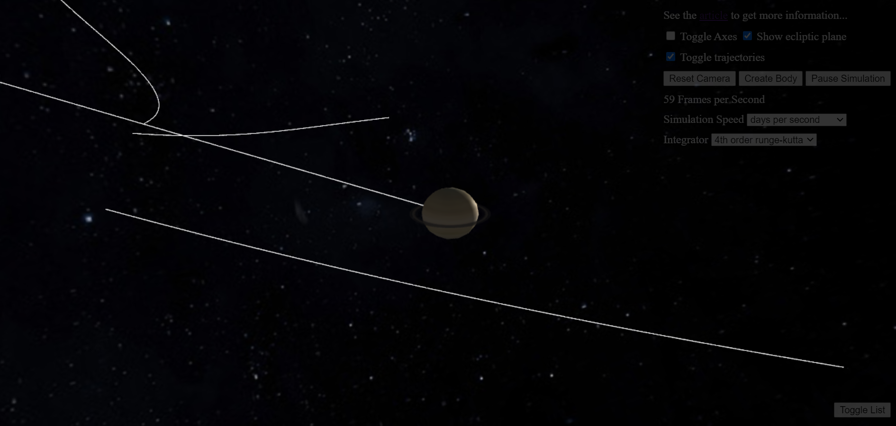
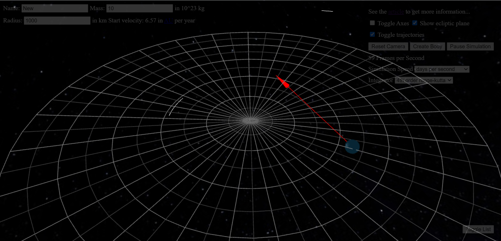

Simulation of our Solar System
*go back to simulation
What is it?
In this program we simulate the motion of 22 celestial objects in our solar
system. This includes the Sun, planets and some of their natural satellites.
The initial position and velocity data (Ephemeris) are being loaded from
NASA's HORIZONS telnet server. You can visit the
web interface of this
service to get an idea what that is. After initial positions are loaded,
a runge-kutta-4 integrator is used to solve the differential equation of
motion, Newton's universal gravitational law. Here is the overview of the
features:
Physical Background
Newton's universal gravitational law between celestial bodies \( i \) and \( j \)
can be written as follows:
\[ \vec{F}_{ij} = G \frac{ m_i m_j (\vec{x}_j - \vec{x}_i) }{
|\vec{x}_j - \vec{x}_i|^3}. \]
Hier \( \vec{F}_{ij} \) is the force on the body \( i \) applied by \( j \).
\( G=6.67\times 10^{-11} m^3 kg^{-1}s^{-2} \) is the gravitational constant.
\( m_i \) and \( \vec{x}_i \) are the mass and position vector of the body i respectively.
Summing over index \( j \) would give the total force on the body \( i \):
\[
\vec{F}_{i} = \sum\limits_{j=1}^N G \frac{ m_i m_j (\vec{x}_j - \vec{x}_i) }{
|\vec{x}_j - \vec{x}_i|^3}.
\]
\( N \) is the number of celestial bodies in the simulation, hence the name N-body simulation.
Using Newton's second law \( \vec{F} = m \vec{a} \) and writing acceleration as the second
derivative of the position vector \( \vec{a} = \ddot{\vec{x}} \), we can rewrite the gravitation law
as follows:
\[
m_i\ddot{\vec{x}}_{i} = \sum\limits_{j=1}^N G \frac{ m_i m_j (\vec{x}_j - \vec{x}_i) }{
|\vec{x}_j - \vec{x}_i|^3}.
\]
This is a second order
ordinary differential equation (ODE):
\[
\ddot{\vec{x}} = f(t, \vec{x}).
\]
One can rewrite a second order ODE as a first order ODE as follows:
$$
\begin{align}
\vec{y} &= \left( \vec{x}, \dot{\vec{x}} \right), \\
\dot{\vec{y}} &= \left( \dot{\vec{x}}, f(t, \vec{x}) \right),\\
\dot{\vec{y}} &= \tilde{f}(t, \vec{y}).
\end{align}
$$
Numerical Integrators
This particular type of ODE we are dealing with in the N-body-simulation is called
initial value problem. There are many mathematical methods to solve initial value
problems numerically. One of the simplest ones is the
euler method. It is an iterative
solution, where one starts at the given initial values \( \vec{y}_0 \) at \( t_0 \) and calculate the \( n \)-th
solution as follows:
\[
\vec{y}_n = \vec{y}_{n-1} + h \tilde{f}(t_{n-1}, \vec{y}_{n-1}),
\]
where \( h \) is the time step size: \( t_n = t_{n-1} + h \).
The euler method gives reasonable numerical approximations to the solutions of
the ODEs when the step size \( h \) is small enough. The
runge-kutta algorithms
are slightly more complicated. But they deliver better results than euler method for the same stepsize.
In our program one can change the integrator used by the physics engine during runtime.
Simulation
Simulating N-body-problem means solving the ODE of the problem in the runtime. Our program aims to call 30
physics ticks per second. In a physics tick the next step of the solution for all bodies is calculated.
One can change the speed of the time progress in the simulation simple by changing the step size \( h \).
This feature is also implemented in our program. Though for some speeds the step size is so big, that the simulation
becomes unstable, e.g. jupiters and saturns satellites jump around. To prevent this we increased the
number of physics ticks per second for high simulation speeds, which, sadly, resulted in the performance drop.
Object Trajectories

From the start of the simulation position vectors of the celestial bodies in every physics frame is saved and
the array of this points are visualized in form of a trajectory. The number of the points saved in the trajectory
is fixed to be 200. For slower simulation speeds the trajectory seems to be really short.
Adding New Bodies To The System

Clicking the button Create Body will pause the simulation and allow placing new celestial objects into our solar
system. We suggest to play around with this feature to see, e.g. what happens if we add another sun between
Earth and Mars. A mouse drag with right mouse button will place the body at the start point of the drag and allow to
determine the direction and magnitude of the speed vector according the drag end position. For now it is only possible
to place new bodies on the ecliptical plane. You can add custom name
and change mass and radius of the new body at the top of the screen.